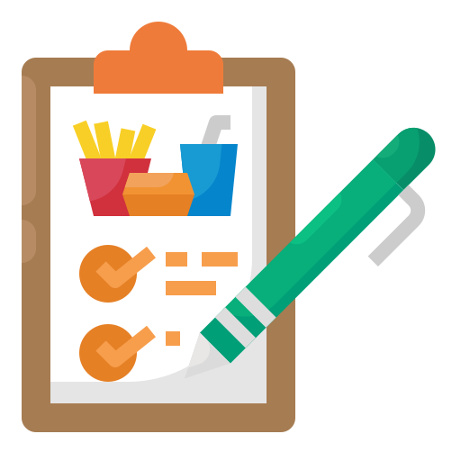

Informáte, así podrás tener las bases de tu proyecto
Haz uso de diferentes fuentes
de información (libros técnicos, revistas especializadas,
manuales, películas de vídeo, etc.)
Este es el primer paso, y el que define si el proyecto tiene buenos fundamentos o no, se definen objetivos para garantizar un alto grado de identificación y motivación.
Vamos a ver un ejemplo con 2 situaciones, la primera es que quiero realizar un viaje al extranjero, y la segunda es como hago una lasaña
¿Cómo me informo acerca del viaje?
Informarme sobre mi presupuesto

La primer investigación que debería hacer es sobre mi presupuesto, ya que todo lo demás se va basa en esto.
Indagar sobre el hospedaje

Debo pensar donde me voy a hospedar, en un hotel, tengo algún amigo en el país, me quedo en un airbnb, etc.
Buscar boletos de avión

Ya que conozco mi presupuesto y la fecha en que puedo hacer el viaje, puedo informarme sobre los boletos de avión adecuados.
¿Cómo me informo sobre como hacer una lasaña?
Invetigar sobre los tipos de lasaña
Debo investigar sobre que tipo de carne quiero que tenga la lasaña por ejemplo: si de pollo, de carne o mixtas o si quiero salsa blanca o salsa roja,
Indagar sobre ingredientes

Luego de decidirme sobre que tipo de lasaña quiero haer, debo investigar sobre los productos que tengo que comprar, su precios y comparar cuáles se adaptan a mis necesidades
Buscar recetas de lasañas
Debo buscar recetas de lasaña para ver como se hacen, de esta manera tendré una base sobre como iniciar mi propia receta